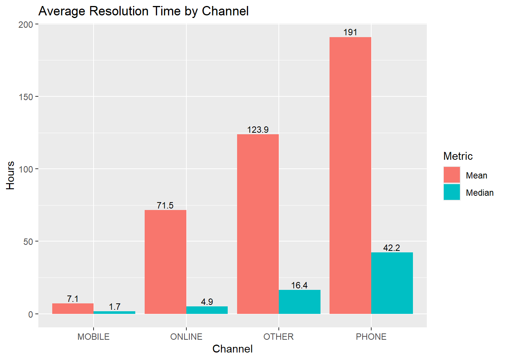
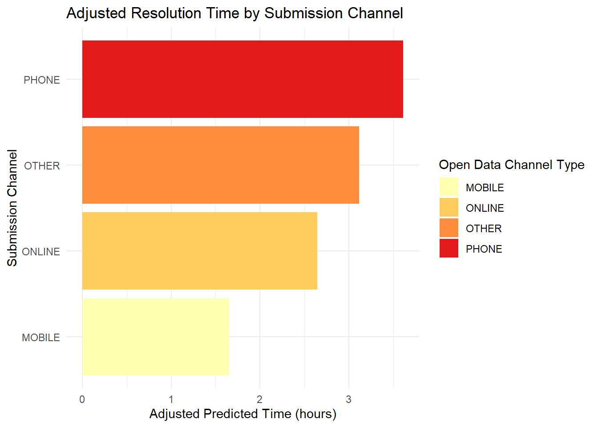
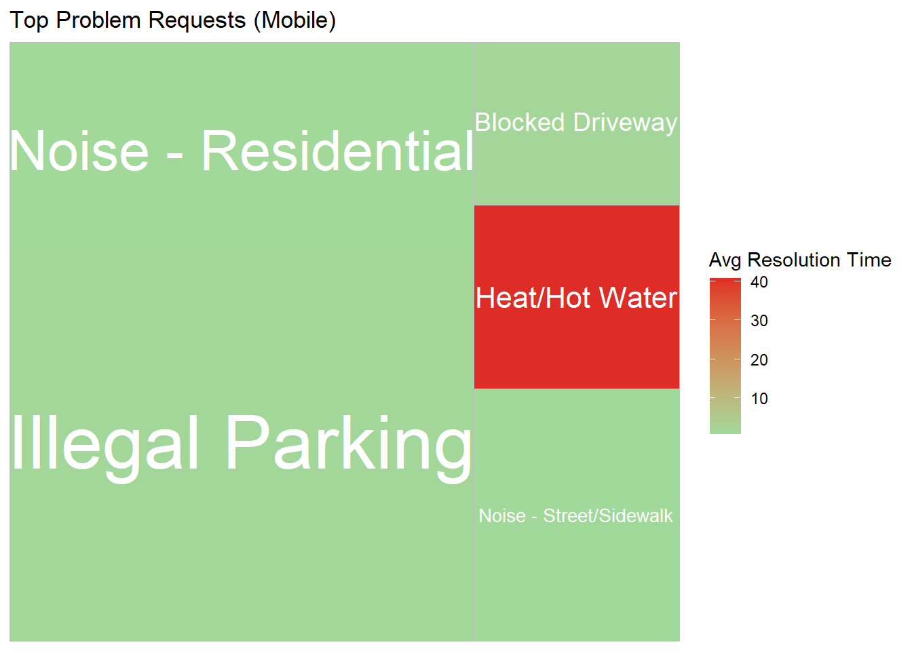
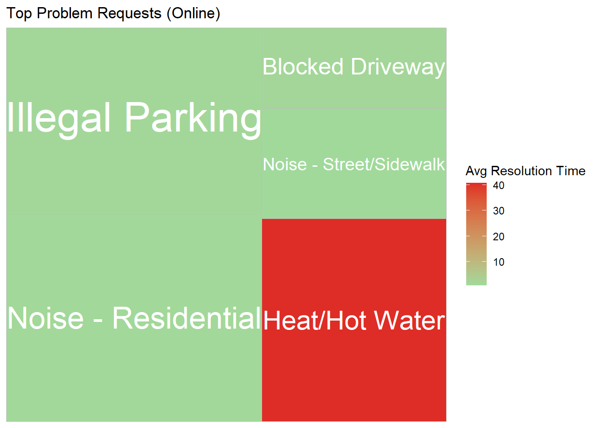
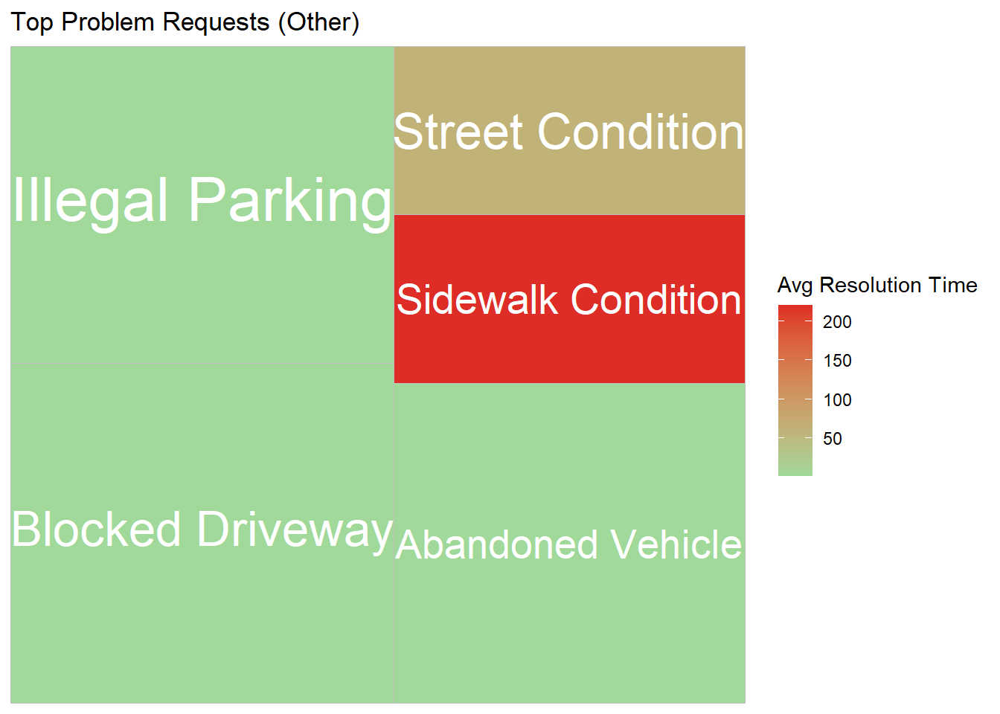
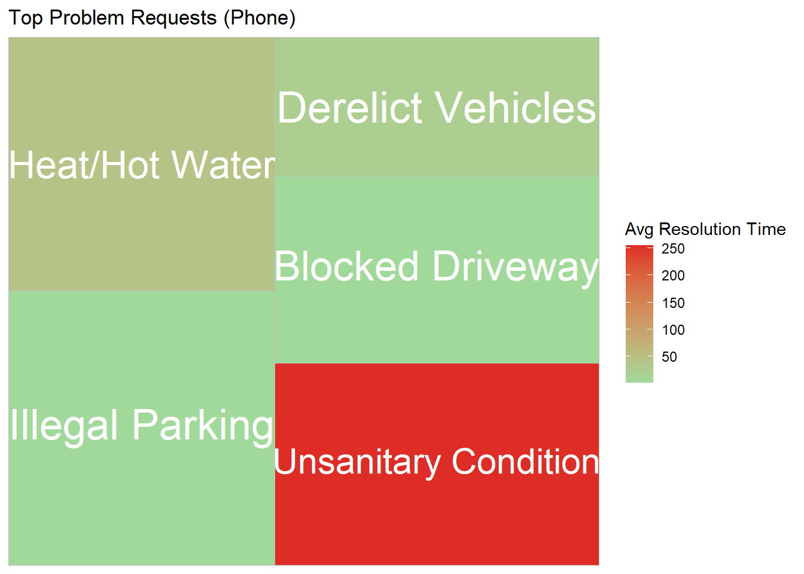

Code
library(data.table)
library(dplyr)
library(readr)
library(lubridate)
library(stringr)
library(tidyr)
library(ggplot2)
library(gt)
library(plotly)
library(shiny)
library(sf)
library(dplyr)
library(treemapify)
library(scales)jackeee101
What factors drive 311 service request response and resolution times, and do they suggest segmented prioritization of issues?
What is the impact of the request submission method (Phone, Web, App) on service request resolution?
#read 2022 files
phone2022 <- fread("2022_phone.csv")
online2022 <- fread("2022_online.csv")
other2022 <- fread("2022_other.csv")
#combine 2022 files
all_2022 <- bind_rows(
phone2022 |> mutate(across(everything(), as.character)),
online2022 |> mutate(across(everything(), as.character)),
other2022 |> mutate(across(everything(), as.character))
)
#read 2023 files
phone2023 <- fread("2023_phone.csv")
online2023 <- fread("2023_online.csv")
other2023 <- fread("2023_other.csv")
#combine 2023 files
all_2023 <- bind_rows(
phone2023 |> mutate(across(everything(), as.character)),
online2023 |> mutate(across(everything(), as.character)),
other2023 |> mutate(across(everything(), as.character))
)
#read 2024 files
phone2024 <- fread("2024_phone.csv")
online2024 <- fread("2024_online.csv")
other2024 <- fread("2024_other.csv")
#combine 2024 files
all_2024 <- bind_rows(
phone2024 |> mutate(across(everything(), as.character)),
online2024 |> mutate(across(everything(), as.character)),
other2024 |> mutate(across(everything(), as.character))
)
#read 2025 files
phone2025 <- fread("2025_phone.csv")
online2025 <- fread("2025_online.csv")
other2025 <- fread("2025_other.csv")
#combine 2025 files
all_2025 <- bind_rows(
phone2025 |> mutate(across(everything(), as.character)),
online2025 |> mutate(across(everything(), as.character)),
other2025 |> mutate(across(everything(), as.character))
)
#select only the columns I need for the question
all_2022mod <- all_2022 |>
select(`Created Date`,`Closed Date`,Agency,`Agency Name`,`Problem (formerly Complaint Type)`,`Problem Detail (formerly Descriptor)`,`Open Data Channel Type`,Status, Borough,Location)
all_2023mod <- all_2023 |>
select(`Created Date`,`Closed Date`,Agency,`Agency Name`,`Problem (formerly Complaint Type)`,`Problem Detail (formerly Descriptor)`,`Open Data Channel Type`,Status, Borough,Location)
all_2024mod <- all_2024 |>
select(`Created Date`,`Closed Date`,Agency,`Agency Name`,`Problem (formerly Complaint Type)`,`Problem Detail (formerly Descriptor)`,`Open Data Channel Type`,Status, Borough,Location)
all_2025mod <- all_2025 |>
select(`Created Date`,`Closed Date`,Agency,`Agency Name`,`Problem (formerly Complaint Type)`,`Problem Detail (formerly Descriptor)`,`Open Data Channel Type`,Status, Borough,Location)
all_years <- bind_rows(all_2022mod, all_2023mod, all_2024mod, all_2025mod)
glimpse(all_years)Rows: 13,475,073
Columns: 10
$ `Created Date` <chr> "12/31/2022 10:39:23 PM", "12/3…
$ `Closed Date` <chr> "01/01/2023 02:36:17 AM", "01/0…
$ Agency <chr> "NYPD", "NYPD", "NYPD", "DSNY",…
$ `Agency Name` <chr> "New York City Police Departmen…
$ `Problem (formerly Complaint Type)` <chr> "Illegal Parking", "Illegal Par…
$ `Problem Detail (formerly Descriptor)` <chr> "Blocked Sidewalk", "Blocked Hy…
$ `Open Data Channel Type` <chr> "PHONE", "PHONE", "PHONE", "PHO…
$ Status <chr> "Closed", "Closed", "Closed", "…
$ Borough <chr> "BRONX", "BRONX", "BROOKLYN", "…
$ Location <chr> "POINT (-73.828890858381 40.831…[1] 13475073In order to load the data, I read each year’s file separately and modified each so that they only have the varaibles I need before combining them into one file. I then saved it as a readRDS for easy data access in the future.
I use the glimpse function and nrow to double-check I have all the rows and columns needed.
all_years$Created_Date <- mdy_hms(all_years$`Created Date`)
all_years$Closed_Date <- mdy_hms(all_years$`Closed Date`)
all_years$Time_to_Resolve_Hours <- as.numeric(all_years$Closed_Date - all_years$Created_Date, units="hours")
all_years <- all_years |>
filter(`Open Data Channel Type` != "UNKNOWN",
!is.na(Time_to_Resolve_Hours),
Time_to_Resolve_Hours > 0)
all_years <- all_years |>
mutate(
problem_clean =
str_to_title(
str_to_lower(`Problem (formerly Complaint Type)`)))
all_years <- all_years |>
mutate(
category = case_when(
# Transportation
`Problem (formerly Complaint Type)` %in% c(
"Illegal Parking","Blocked Driveway","Traffic",
"Broken Parking Meter","Street Condition",
"Highway Condition","Municipal Parking Facility",
"Bridge Condition","Tunnel Condition",
"Traffic Signal Condition","Street Light Condition",
"Street Sweeping Complaint","Bus Stop Shelter Complaint",
"Bus Stop Shelter Placement","Abandoned Vehicle",
"Derelict Vehicles","Abandoned Bike","Bike Rack",
"Bike Rack Condition","Bike/Roller/Skate",
"Bike/Roller/Skate Chronic","E-Scooter",
"Leaning Bar","Wayfinding"
) ~ "Transportation",
# Housing / Construction
`Problem (formerly Complaint Type)` %in% c(
"Heat/Hot Water","Non-Residential Heat",
"Water Leak","Plumbing",
"General Construction/Plumbing",
"Electric","Electrical","Door/Window",
"Flooring/Stairs","Paint/Plaster",
"Peeling Paint","Mold","Outside Building",
"Building Condition","Building/Use",
"Boiler","Boilers","Elevator",
"Unstable Building",
"Construction Safety Enforcement",
"Construction Lead Dust","Scaffold Safety",
"Best/Site Safety","Facade Insp Safety Pgm",
"Facades","Cranes And Derricks",
"Stalled Sites","Special Operations",
"Executive Inspections",
"Building Marshals Office",
"Building Marshal's Office",
"Dob Posted Notice Or Order",
"Special Projects Inspection Team (Spit)",
"Special Natural Area District (Snad)",
"Emergency Response Team (Ert)",
"Real Time Enforcement",
"Investigations And Discipline (Iad)",
"Borough Office","Dept Of Investigations",
"Ahv Inspection Unit","Srde","Snw",
"Covid-19 Non-Essential Construction"
) ~ "Housing/Construction",
# Sanitation / Waste
`Problem (formerly Complaint Type)` %in% c(
"Unsanitary Condition","Dirty Condition",
"Missed Collection","Illegal Dumping",
"Dumpster Complaint",
"Residential Disposal Complaint",
"Commercial Disposal Complaint",
"Institution Disposal Complaint",
"Transfer Station Complaint",
"Industrial Waste",
"Litter Basket Complaint",
"Litter Basket Request",
"Recycling Basket Complaint",
"Electronics Waste Appointment",
"Request Large Bulky Item Collection",
"Sanitation Worker Or Vehicle Complaint",
"Dsny Internal","Lot Condition",
"Seasonal Collection"
) ~ "Sanitation/Waste",
# Water / Environmental
`Problem (formerly Complaint Type)` %in% c(
"Sewer","Sewer Maintenance",
"Water System","Water Conservation",
"Water Quality","Drinking Water",
"Water Drainage","Water Maintenance",
"Standing Water","Indoor Sewage",
"Dep Sidewalk Condition",
"Dep Street Condition",
"Dep Highway Condition",
"Building Drinking Water Tank",
"Cooling Tower","Oil Or Gas Spill",
"Radioactive Material",
"Hazardous Materials",
"Asbestos","Lead",
"X-Ray Machine/Equipment"
) ~ "Water/Environmental",
# Noise
str_detect(`Problem (formerly Complaint Type)`, "Noise") ~ "Noise",
# Animals / Parks
`Problem (formerly Complaint Type)` %in% c(
"Dead Animal","Animal-Abuse",
"Animal In A Park",
"Unsanitary Animal Pvt Property",
"Unsanitary Animal Facility",
"Illegal Animal Kept As Pet",
"Illegal Animal Sold",
"Animal Facility - No Permit",
"Rodent","Harboring Bees/Wasps",
"Unleashed Dog","Unlicensed Dog",
"Dead/Dying Tree","Damaged Tree",
"Illegal Tree Damage",
"Overgrown Tree/Branches",
"New Tree Request","Plant",
"Poison Ivy","Mosquitoes",
"Pet Shop","Pet Sale",
"Uprooted Stump",
"Wood Pile Remaining",
"Unsanitary Pigeon Condition",
"Sidewalk Condition"
) ~ "Animals/Parks",
# Health / Food
`Problem (formerly Complaint Type)` %in% c(
"Food Establishment","Food Poisoning",
"Indoor Air Quality","Air Quality",
"Smoking","Smoking Or Vaping",
"Drinking","Calorie Labeling",
"Trans Fat","Tanning",
"Face Covering Violation",
"Vaccine Mandate Non-Compliance",
"Private School Vaccine Mandate Non-Compliance",
"Private Or Charter School Reopening",
"Cannabis Retailer",
"Tobacco Or Non-Tobacco Sale",
"Mobile Food Vendor",
"Day Care",
"Beach/Pool/Sauna Complaint",
"Lifeguard"
) ~ "Health/Food",
# Public Safety / Quality of Life
`Problem (formerly Complaint Type)` %in% c(
"Illegal Fireworks","Drug Activity",
"Non-Emergency Police Matter",
"Panhandling","Squeegee",
"Disorderly Youth",
"Mass Gathering Complaint",
"Encampment",
"Homeless Person Assistance",
"Violation Of Park Rules",
"Quality Of Life","Safety",
"General","Obstruction",
"Posting Advertisement",
"Illegal Posting","Graffiti",
"Urinating In Public",
"Lost Property","Found Property"
) ~ "Public Safety/Quality of Life",
# Taxi / FHV
`Problem (formerly Complaint Type)` %in% c(
"Taxi Complaint","Taxi Report",
"Taxi Licensee Complaint",
"Taxi Compliment",
"Green Taxi Complaint",
"Green Taxi Report",
"Dispatched Taxi Complaint",
"Dispatched Taxi Compliment",
"For Hire Vehicle Complaint",
"For Hire Vehicle Report",
"Fhv Licensee Complaint"
) ~ "Taxi/FHV",
# Government / Administrative
`Problem (formerly Complaint Type)` %in% c(
"Consumer Complaint",
"Retailer Complaint",
"Incorrect Data","Internal Code",
"Linknyc","Adopt-A-Basket",
"Public Payphone Complaint",
"School Maintenance","Bench",
"Maintenance Or Facility",
"Outdoor Dining",
"Vendor Enforcement",
"Ferry Complaint","Ferry Inquiry",
"Street Sign - Dangling",
"Street Sign - Missing",
"Street Sign - Damaged",
"Highway Sign - Dangling",
"Highway Sign - Missing",
"Highway Sign - Damaged",
"Public Toilet","Tattooing",
"Ztestint","Unspecified"
) ~ "Government/Administrative",
TRUE ~ "Other"
)
)
saveRDS(all_years, "all_years.rds", compress = "xz")
glimpse(all_years)Rows: 12,017,632
Columns: 15
$ `Created Date` <chr> "12/31/2022 10:39:23 PM", "12/3…
$ `Closed Date` <chr> "01/01/2023 02:36:17 AM", "01/0…
$ Agency <chr> "NYPD", "NYPD", "NYPD", "DSNY",…
$ `Agency Name` <chr> "New York City Police Departmen…
$ `Problem (formerly Complaint Type)` <chr> "Illegal Parking", "Illegal Par…
$ `Problem Detail (formerly Descriptor)` <chr> "Blocked Sidewalk", "Blocked Hy…
$ `Open Data Channel Type` <chr> "PHONE", "PHONE", "PHONE", "PHO…
$ Status <chr> "Closed", "Closed", "Closed", "…
$ Borough <chr> "BRONX", "BRONX", "BROOKLYN", "…
$ Location <chr> "POINT (-73.828890858381 40.831…
$ Created_Date <dttm> 2022-12-31 22:39:23, 2022-12-3…
$ Closed_Date <dttm> 2023-01-01 02:36:17, 2023-01-0…
$ Time_to_Resolve_Hours <dbl> 3.94833333, 4.01888889, 0.35222…
$ problem_clean <chr> "Illegal Parking", "Illegal Par…
$ category <chr> "Transportation", "Transportati…Using the mdy_hms function from the lubricate package, I convert the Created_Date and Closed_Date columns into a proper time format to calculate the time to resolve.
Then I created a Time_to_Resolve_Hours column by calculating the time difference between Created_Date and Closed_Date.
Total rows (13,475,073)
Filtered out unknown submissions because they only made up 0.7% (1,071,590) of observations, but had disproportionately high resolution times in comparison to other channels.
Filtered out submissions with NA created time/closed times. (241033)
Filtered out submissions where the closed dates were before the creation date (14,355)
Total rows after cleaning (12,017,632)
I convert problem details that have duplicates due to different capitalization and wording differences into one consistent problem detail.
I also used AI to convert all problem details into 11 categories for easy data grouping if needed.
distribution <- all_years |>
group_by(`Open Data Channel Type`) |>
count()
plot_ly(
distribution,
labels = ~`Open Data Channel Type`,
values = ~n,
type = "pie",
marker = list(
colors = c(
"#F6D186", # soft yellow
"#F4A261", # muted orange
"#E9C46A", # warm mustard
"#E76F51", # soft burnt orange
"#F2CC8F" # pale golden
)
)
)I made a pie chart showcasing the proportion of each submission method to the overall count.
Looking at the pie chart, you can see that online submissions take up a majority of the submissions, followed by phone, mobile, and other. The count should be taken into consideration when looking at the average as the small sample size makes it susceptible to inaccurate averages.
Data Channels consists of
Phone - called 311 and spoke to system/operator
Mobile - submitted via smartphone (app/mobile interface)
Online - submitted via website
Other - other
avg_resolutiontime <- all_years |>
select(`Created Date`,`Closed Date`,`Open Data Channel Type`,Status,Time_to_Resolve_Hours) |>
filter(str_detect(Status,"Closed")) |>
group_by(`Open Data Channel Type`)|>
summarize(mean_resolution = mean(Time_to_Resolve_Hours, na.rm = TRUE),
median_resolution = median(Time_to_Resolve_Hours, na.rm = TRUE),
IQR = IQR(Time_to_Resolve_Hours))
avg_resolutiontime |>
gt() |>
cols_label(mean_resolution = "Mean Resolution",
median_resolution = "Median Resolution",
IQR = "IQR") |>
tab_header(title = "Average Resolution Time (Hour) Per Channel") |>
cols_align(align = "center")| Average Resolution Time (Hour) Per Channel | |||
| Open Data Channel Type | Mean Resolution | Median Resolution | IQR |
|---|---|---|---|
| MOBILE | 184.3366 | 1.696944 | 7.089167 |
| ONLINE | 363.2156 | 4.933611 | 71.468333 |
| OTHER | 675.7210 | 16.352500 | 123.850069 |
| PHONE | 415.9339 | 42.213056 | 190.996111 |
I created a new table called avg_resolutiontime that calculates the mean, median, and IQR of each submission method. I included the median because I wanted to compare against the mean and found that there was a huge difference. And because there was such a big difference, I also calculated the IQR to see how spread out the data is.
Mobile submissions take the least time to resolve across all averages, followed by online, phone, and other. Others had the longest averfage resolution time, which ranked it last. The mean for Others, when compared to its median and IQR, indicates large distortions. Overall, the recommended method of 311 submission seems to be mobile based on the average.
bar_avg <- avg_resolutiontime |>
pivot_longer(
cols = c(median_resolution, IQR),
names_to = "metric",
values_to = "value"
)
ggplot(bar_avg,
aes(x = `Open Data Channel Type`, y = value, fill = metric)) +
geom_bar(stat = "identity", position = "dodge") +
geom_text(aes(label = round(value, 1)),
position = position_dodge(width = 0.9),
vjust = -0.3,
size = 3) +
scale_fill_discrete(labels = c("Mean", "Median", "IQR")) +
labs(
title = "Average Resolution Time by Channel",
x = "Channel",
y = "Hours",
fill = "Metric"
)
The huge difference between the median and the mean shows that the data is extremely right-skewed.
In this case, IQR and the median are better for interpreting the normal resolution times as they ignore the extremely large outliers in the data. The bigger the IQR, the less reliable a submission method is.
df_agg <- all_years |>
mutate(log_time = log1p(Time_to_Resolve_Hours)) |>
group_by(`Open Data Channel Type`, Borough, category, Agency) |>
summarise(
avg_log_time = mean(log_time),
n = n(),
.groups = "drop"
)
model2 <- lm(
avg_log_time ~ `Open Data Channel Type` + Borough + category + Agency,
data = df_agg,
weights = n
)
best_channel <- df_agg |>
mutate(pred = predict(model2, newdata = df_agg)) |>
group_by(`Open Data Channel Type`) |>
summarise(avg_pred = weighted.mean(pred, n), .groups = "drop") |>
arrange(avg_pred)
best_channel |>
gt() |>
cols_label(`Open Data Channel Type` = "Submission Type",
avg_pred = "Relative Resolution Time") |>
tab_header(title = "Relative Resolution Time (Hour) Per Channel") |>
cols_align(align = "center")| Relative Resolution Time (Hour) Per Channel | |
| Submission Type | Relative Resolution Time |
|---|---|
| MOBILE | 1.653825 |
| ONLINE | 2.642933 |
| OTHER | 3.111672 |
| PHONE | 3.610669 |
ggplot(best_channel,
aes(x = reorder(`Open Data Channel Type`, avg_pred),
y = avg_pred,
fill = `Open Data Channel Type`)) +
geom_col() +
coord_flip() +
scale_fill_brewer(palette = "YlOrRd") +
theme_minimal() +
labs(
x = "Submission Channel",
y = "Adjusted Predicted Time (hours)",
title = "Adjusted Resolution Time by Submission Channel"
)
Controlling for borough, problem category, and agency, I used a weighted regression model and log-transformed resolution time to calculate the best submission method. The results remain the sam, mobile was the best submission method. But is this the case for all problem types?
These calculations of median/mean/IQR and the linear model do not account for user behavior and how bias can skew the resolution times.
# A tibble: 4 × 2
# Groups: Open Data Channel Type [4]
`Open Data Channel Type` n
<chr> <int>
1 MOBILE 2777128
2 ONLINE 5595734
3 OTHER 370
4 PHONE 3644400average_res <- all_years |>
group_by(problem_clean) |>
summarise(
median_res = round(median(Time_to_Resolve_Hours, na.rm = TRUE), 2),
.groups = "drop")
problems <- all_years |>
group_by(`Open Data Channel Type`, problem_clean) |>
summarise(
n = n(),
.groups = "drop"
) |>
mutate(
total = case_when(
`Open Data Channel Type` == "MOBILE" ~ 2777128,
`Open Data Channel Type` == "ONLINE" ~ 5595734,
`Open Data Channel Type` == "PHONE" ~ 3644400,
`Open Data Channel Type` == "OTHER" ~ 370,
TRUE ~ NA_real_
),
share = n / total
) |>
left_join(average_res, by = "problem_clean") |>
group_by(`Open Data Channel Type`) |>
slice_max(n, n = 10) |>
ungroup() |>
select(-n, - total)First, I calculate the number of submissions for each data channel, which I then merged with the dataframe that calculates the top problem types for each data channel.
I then made a treemap of each submission channel that details the top 5 problem types, what share the problem type takes up of the overall submission, and color-coded the problem by the average resolution time.
problems |>
filter(`Open Data Channel Type` == "MOBILE") |>
slice_max(order_by = share, n = 5) |>
mutate(problem_clean = str_to_title(problem_clean)) |>
ggplot(aes(area = share, fill = median_res, label = problem_clean)) +
geom_treemap() +
geom_treemap_text(colour = "white", place = "centre", grow = TRUE, size = 5) +
labs(
title = "Top Problem Requests (Mobile)",
fill = "Avg Resolution Time"
) +
scale_fill_gradient(
low = "#a1d99b",
high = "#de2d26"
) +
theme_minimal()
problems |>
filter(`Open Data Channel Type` == "ONLINE") |>
select(-`Open Data Channel Type`) |>
slice_max(order_by = share, n = 5) |>
mutate(problem_clean = str_to_title(problem_clean)) |>
ggplot(aes(area = share, fill = median_res, label = problem_clean)) +
geom_treemap() +
geom_treemap_text(colour = "white", place = "centre", grow = TRUE, size = 5) +
labs(
title = "Top Problem Requests (Online)",
fill = "Avg Resolution Time"
) +
scale_fill_gradient(
low = "#a1d99b",
high = "#de2d26"
) +
theme_minimal()
problems |>
filter(`Open Data Channel Type` == "OTHER") |>
select(-`Open Data Channel Type`) |>
slice_max(order_by = share, n = 5) |>
mutate(problem_clean = str_to_title(problem_clean)) |>
ggplot(aes(area = share, fill = median_res, label = problem_clean)) +
geom_treemap() +
geom_treemap_text(colour = "white", place = "centre", grow = TRUE, size = 5) +
labs(
title = "Top Problem Requests (Other)",
fill = "Avg Resolution Time"
) +
scale_fill_gradient(
low = "#a1d99b",
high = "#de2d26"
) +
theme_minimal()
problems |>
filter(`Open Data Channel Type` == "PHONE") |>
select(-`Open Data Channel Type`) |>
slice_max(order_by = share, n = 5) |>
mutate(problem_clean = str_to_title(problem_clean)) |>
ggplot(aes(area = share, fill = median_res, label = problem_clean)) +
geom_treemap() +
geom_treemap_text(colour = "white", place = "centre", grow = TRUE, size = 5) +
labs(
title = "Top Problem Requests (Phone)",
fill = "Avg Resolution Time"
) +
scale_fill_gradient(
low = "#a1d99b",
high = "#de2d26"
) +
theme_minimal()
From the generated treemaps, you can see that the treemaps for other and phone have more orange and red problems, and the average resolution time ranges from 0 to 200, despite the average resolution time for mobile and online only ranges from 0 to 40.
The reason for the significantly high resolution time for Other and Phone is that people tend to use those channels for problems with a significantly longer resolution time, such as sidewalk conditions and unsanitary conditions that take 200+ hours to complete.
Therefore, user behavior skews the overall resolution time, and even though mobile might be the fastest overall, it may not be the best for all problem types.
all_years_clean <- all_years |>
mutate(
lon = as.numeric(str_extract(Location, "-?\\d+\\.\\d+(?= )")),
lat = as.numeric(str_extract(Location, "(?<= )-?\\d+\\.\\d+"))
)
dups <- all_years_clean |>
mutate(
lon_r = round(lon, 5),
lat_r = round(lat, 5)
) |>
group_by(
lat_r,
lon_r,
problem_clean,
`Created Date`
) |>
filter(n() > 1) |>
select(`Created Date`,problem_clean,lat, lon,`Open Data Channel Type`,`Closed Date`)
dups |>
count()# A tibble: 296,456 × 5
# Groups: lat_r, lon_r, problem_clean, Created Date [296,456]
lat_r lon_r problem_clean `Created Date` n
<dbl> <dbl> <chr> <chr> <int>
1 40.5 -74.2 Safety 12/03/2024 03:53:33 PM 2
2 40.5 -74.2 Unsanitary Condition 01/09/2022 11:00:47 PM 2
3 40.5 -74.2 Plumbing 01/16/2025 04:12:43 PM 3
4 40.5 -74.3 Noise 03/31/2022 08:26:00 PM 2
5 40.5 -74.2 Door/Window 01/20/2024 02:43:17 PM 2
6 40.5 -74.2 Water System 01/27/2025 11:11:00 AM 2
7 40.5 -74.2 Safety 02/24/2023 09:33:02 AM 2
8 40.5 -74.2 Plumbing 01/11/2023 09:28:39 AM 2
9 40.5 -74.2 Plumbing 10/18/2024 01:22:40 PM 2
10 40.5 -74.2 Paint/Plaster 12/29/2022 01:21:32 PM 3
# ℹ 296,446 more rowsTop dup submission for phone
phonedups <- dups |>
ungroup() |>
filter(`Open Data Channel Type` == "PHONE") |>
select(-lat_r,-lon_r,-lat, -lon,-`Created Date`,-`Closed Date`)
phonedups |>
mutate(problem_clean = str_to_title(problem_clean)) |>
count(problem_clean) |>
arrange(desc(n)) |>
slice_head(n=5) |>
gt() |>
cols_label(problem_clean = "Problem",
n = "Count") |>
tab_header(title = "Top 5 Problems Dup/Reopened Issues by Phone") |>
cols_align(align = "center") |>
opt_table_lines() |>
fmt_number(n, decimals = 0)| Top 5 Problems Dup/Reopened Issues by Phone | |
| Problem | Count |
|---|---|
| Unsanitary Condition | 111,779 |
| Paint/Plaster | 72,274 |
| Plumbing | 58,357 |
| Door/Window | 35,427 |
| Flooring/Stairs | 16,281 |
I also looked into the phone submissions to get a bigger picture of what exactly is distorting the resolution time, and found that there are 600k duplicated or reopened cases. And a majority of these duplicated submissions were phone submissions.
Furthermore, most of these duplicated submissions were related to unsanitary conditions, which had the longest resolution times.
df_agg <- all_years |>
group_by(`Open Data Channel Type`, Borough, category, Agency) |>
summarise(
avg_time = mean(Time_to_Resolve_Hours),
n = n(),
.groups = "drop"
)
model <- lm(avg_time ~ `Open Data Channel Type` + Borough + category + Agency,
data = df_agg)
coefs <- summary(model)$coefficients
coefs <- coefs[-1, ]
coefs[order(abs(coefs[,3]), decreasing = TRUE), ] |> head(10) Estimate Std. Error t value Pr(>|t|)
AgencyDOHMH 4391.843 398.7890 11.012948 4.853194e-26
AgencyDPR 4375.864 429.1611 10.196322 8.590254e-23
AgencyEDC 4838.950 596.6529 8.110159 2.411402e-15
categoryGovernment/Administrative 1750.174 226.1719 7.738246 3.719635e-14
categoryTaxi/FHV 2107.893 439.2380 4.798976 1.967663e-06
categoryHealth/Food 1107.017 246.7231 4.486881 8.505204e-06
AgencyDOB 1842.140 507.0411 3.633118 3.014324e-04
AgencyHPD 1497.479 427.2230 3.505146 4.867658e-04
AgencyTLC 1669.878 488.0689 3.421398 6.608547e-04
AgencyDOT 1307.217 383.0560 3.412600 6.821802e-04I also extracted the coefficient table from the linear model to see which had the largest t-statistic and what had the strongest relationship with resolution time. The result showed that Agencies had the stronger relationship than submission metho alone.
plot_data <- all_years |>
group_by(problem_clean, `Open Data Channel Type`) |>
summarise(avg_time = median(Time_to_Resolve_Hours), .groups = "drop")
p <- plot_ly(
data = plot_data,
x = ~`Open Data Channel Type`,
y = ~avg_time,
type = "bar",
color = ~`Open Data Channel Type`
)
p <- layout(
p,
title = "Resolution Time by Channel (Filtered by Problem Type)",
xaxis = list(title = "Submission Channel"),
yaxis = list(title = "Average Resolution Time (Hours)")
)ui <- fluidPage(
titlePanel("311 Resolution Time Explorer"),
sidebarLayout(
sidebarPanel(
selectInput(
"problem",
"Select Problem Type:",
choices = unique(all_years$problem_clean)
)
),
mainPanel(
plotlyOutput("plot")
)
)
)
server <- function(input, output) {
output$plot <- renderPlotly({
filtered <- all_years |>
filter(problem_clean == input$problem) |>
group_by(`Open Data Channel Type`) |>
summarise(avg_time = median(Time_to_Resolve_Hours), .groups = "drop")
plot_ly(
filtered,
x = ~`Open Data Channel Type`,
y = ~avg_time,
type = "bar",
color = ~`Open Data Channel Type`
)
})
}
shinyApp(ui, server)channel_problem_summary <- all_years |>
group_by(problem_clean, `Open Data Channel Type`) |>
summarise(
median_time = median(Time_to_Resolve_Hours, na.rm = TRUE),
n = n(),
.groups = "drop"
) |>
filter(n >= 100)
channel_wide <- channel_problem_summary |>
select(problem_clean, `Open Data Channel Type`, median_time) |>
pivot_wider(
names_from = `Open Data Channel Type`,
values_from = median_time,
values_fill = NA,
names_expand = TRUE
)For future work, I made a shiny app with the code attached, that determines the best historical submission type per problem. Although mobile had, on average, the best resolution times, this does not mean it’s the case for all problems. An app that can isolate each problem type to help the user determine the best submission method is the best option.
Click below to open the live dashboard:
👉 311 Service Request Analysis App
ChatGPT was used to help write the code in this project, but all non-code text was generated without the use of any Generative AI tools. Additionally, ChatGPT was used to provide additional background information on the topic and to brainstorm ideas for the final open-ended prompt.
This work ©2025 by jackeee101 was initially prepared as a Mini-Project for STA 9750 at Baruch College. More details about this course can be found at the course site and instructions for this assignment can be found at MP #03